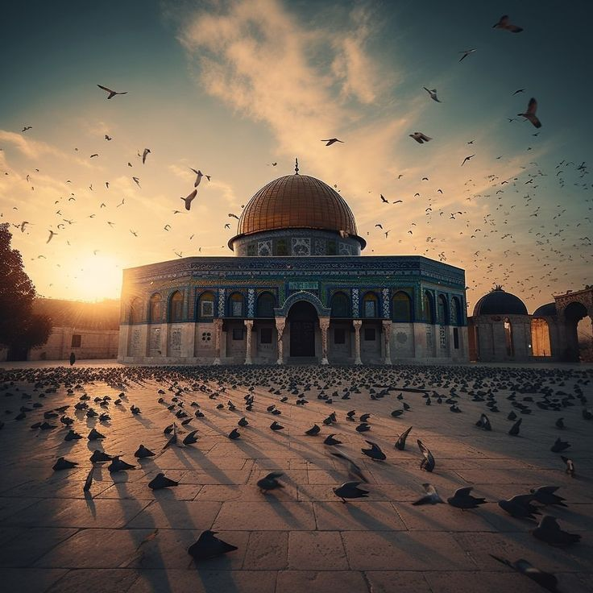
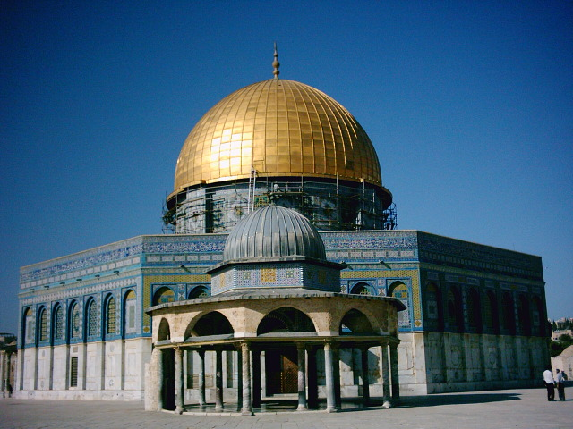
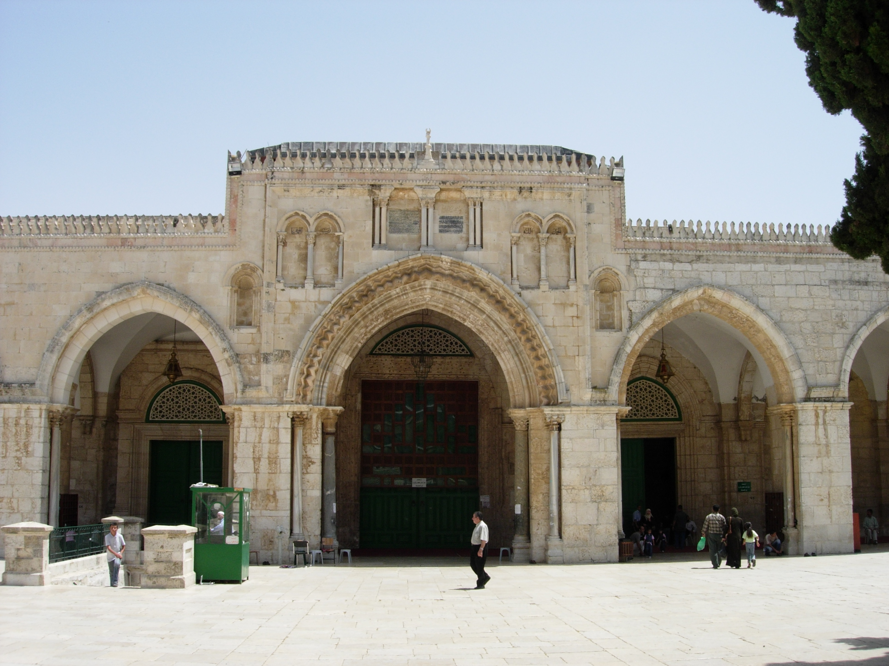
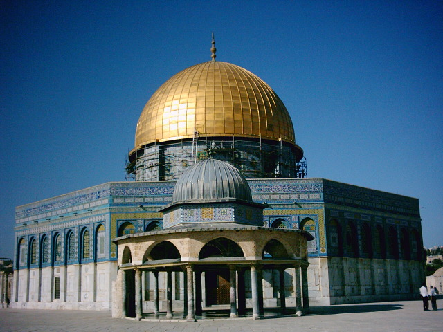
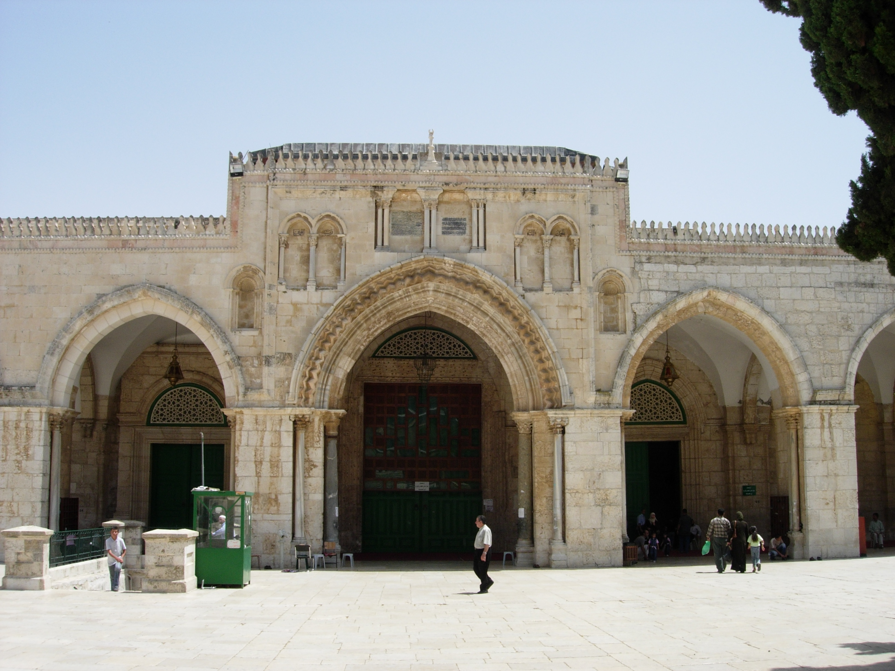

الأقصي
Location
The geographical location of Palestine places it in Southwest Asia, on the southern part of the eastern coast
of the Mediterranean Sea. It serves as a bridge connecting Asia and Africa, the Mediterranean Sea and the Red
Sea, and consequently the Atlantic Ocean and the Indian Ocean.
Astronomical Location
located between longitude 15"،34 and 14"،35 east of Greenwich and latitude 30"،29 and 15"،33 north of the
equator.
Surface Area of Palestine
The total surface area of Palestine is 27,027 square kilometers, including the Tiberias and Hula lakes. The
West Bank's area, including its part of the Dead Sea, is 5,842 square kilometers, while the Gaza Strip's area is
365 square kilometers.
Palestine's Borders (as defined during the British Mandate)
is bordered by the Mediterranean Sea to the west, Syria to the east (with a border length of approximately 76
kilometers), Jordan to the east (with a border length of around 360 kilometers), Lebanon to the north (with a
border length of 79 kilometers), and Sinai to the south (with a border length of 240 kilometers between Rafah
and Taba, including the Gulf of Aqaba).
Al-Aqsa

Al-Aqsa Mosque is one of the three mosques that Muslims travel to , as stated by the Prophet of Islam Muhammad
in his hadith (Do not travel except to three mosques: the Sacred Mosque, Al-Aqsa Mosque, and this mosque of
mine), and Al-Aqsa Mosque has four minarets: the minaret of Bab al-Magharibah in the section. In the southwest,
the minaret of Bab al-Silsilah is on the western side, close to Bab al-Silsilah , the minaret of Bab
al-Ghawanmeh is in the northwest, and the minaret of Bab al-Asbat is in the northern side.
Al-Aqsa Mosque stands within the walls of the Old City of Jerusalem
Specifications
The area of Al-Aqsa Mosque is about 144,000 square meters and is rectangular in shape.
Etymology
Al-Aqsa Mosque has many names, the most important of which are:
Al-Aqsa Mosque: The word “Al-Aqsa” means the farthest, and it was called Al-Aqsa because of the distance between
it and the Sacred Mosque, and it was the farthest mosque on earth from the people of Mecca.
Bayt al-Maqdis: It is the name that was known before Al-Aqsa Mosque in the Holy Qur’an, and this name is the one
used in most of the hadiths of the Prophet Muhammad, such as what he said on the day of the Isra and Mi’raj:
“Then Gabriel, peace be upon him, and I entered Bayt al-Maqdis, and each one of us prayed.” Two rak'ahs.
The sanctity of the mosque for Muslims
God mentioned him in the Qur’an in his description of the event of the Night Journey and Mi’raj: In the name of
God, the Most Gracious, the Most Merciful: “Glory be to Him who took His servant by night from the Sacred Mosque
to the Al-Aqsa Mosque, whose circumference We have blessed to show him of Our signs. Indeed, He is the
All-Hearing, the All-Seeing.”
Mosques in Al-Aqsa Mosque Square
1-Dome of the Rock
2-Al-Marwani Musalla: It is located under the Al-Qibli Mosque
3-Al-Buraq Mosque: at Al-Buraq Wall .
4-Moroccan Mosque
5-Women's Mosque
.jpg) 



Palestinians 48 Overview
The Palestinians of 1948 are an integral part of the Palestinian Arab people, and they are part of the
population of historic Palestine, who were able to remain within the borders of the 1949 armistice in the
country, and preserved their entity and national identity. Their number was about 156 thousand people at the
time; While about 957 of their fellow Palestinians were displaced during the Nakba in 1948; They were uprooted
from their villages and cities, displaced throughout the earth, and occupied the margins of the societies in
which they resided, as refugees, residents, or citizens . The Nakba carried the meaning of stopping the natural
development of the Palestinian people and displacing them, so that they would suffer the burdens of developing
another society in the air, and under refugee tents .
The events of the Nakba had profound repercussions on those remaining in Palestine. They were isolated from
their Arab surroundings, their resources were robbed, and Israel controlled all areas of their daily private,
political, economic and social lives. In addition to all of this, the Nakba destroyed the political entity of
the Palestinian people, dispersed its cultural, social and political elite, and destroyed its facilities,
relationships and economic foundations. The ongoing Nakba also demolished most of its Palestinian cities,
Judaizing all of them, and contributed greatly to distorting the course of its civilization.
The Palestinians of 1948 are the most vital part of the components of the Palestinian people, who are still a
thorn in the side of the occupation, steadfast in their villages, cities and neighborhoods, despite all the
attempts of uprooting, exclusion, marginalization and denial that the Israeli authorities have practiced against
them since 1948 until now . They did not submit or surrender. They stuck to their land and presented martyrs on
“Land Day” in 1976. They adhered to their sanctities, and were at the forefront of defending Al-Aqsa Mosque and
confronting the Judaization plans in occupied Jerusalem. Resistance poets emerged from among them (Mahmoud
Darwish, Samih Al-Qasim, and Tawfiq Ziyad) .
The estimated number of Palestinians at the end of 2022 in the 1948 territories, according to the Palestinian
Central Bureau of Statistics, reached about 1.7 million people.
The Palestinians of 1948 face comprehensive, planned racial discrimination in most areas of life in Israel. Many
of their population centers lack health, educational, and basic infrastructure services. The poverty rate is
high and unemployment is widespread among them. Decision makers in Israel view the Arab population as a
minority; They are second-class citizens, and this perception of them is institutionalized in various fields in
Israel. This is what led to catastrophic indicators for the Palestinians of 1948; Statistics from the National
Insurance Institute for the year 2018 indicate that approximately 60% of Arab families live either below the
poverty line or close to it. While 20% of Jewish families live either below the poverty line or close to it, and
this indicates the extent of the racial discrimination that exists in Israel towards the Palestinians of 1948,
They are all the time in confrontation in one way or another with the state apparatus, and with the psychology
of the Israeli regime, and this is what leads to the destabilization of the Israeli societal network based on
racial discrimination towards the Palestinians in their various places of residence. The constant fact remains
that the Palestinians of 1948 will continue to confront racist Israeli policies with steadfastness and resolve.
They are patient and steadfast in the face of attempts to restrict them and uproot their characteristics and
nationalities. They always shout about their being, their national identity, and their Arab-Palestinian depth.
Religious and tourist attractions of Jerusalem
Whoever studies the holy places of the three religions in the city of Jerusalem learns about the history of the
region, whether politically, economically, socially, or culturally. It is the mirror that reflects the
civilization of the peoples it has conquered throughout the ages.
Perhaps this city, which is considered one of the oldest and holiest cities on Earth, represents the soul for
the three religions. It has been the focus of attention of humanity since the earliest times, as it is the
cradle of Christianity. For Muslims, it is the first of the two qiblahs, the third of the Two Holy Mosques, and
the place of pilgrimage of the Prophet Muhammad, may God bless him and grant him peace.
It is no wonder that history records the greatest battles and heroic epics known to the Arabs and Muslims on the
land of Palestine for the sake of Jerusalem (Ain Jalut, Yarmouk, Hattin, and Ajnadayn), in addition to dozens of
historical battles and wars before Islam, whether local or pagan battles.
Internationally banned weapons and their use by Israel
There are many internationally prohibited weapons and their names vary. They are weapons that are developing
day after day with the aim of lethality, destruction, and devastation. Israel is diligent in using these
weapons to fit and be consistent with the doctrine of the Israeli occupation army and its absolute barbarity
towards stone and people in Palestine, and to harmonize these internationally prohibited and prohibited
weapons with the army’s criminal convictions. And his brutality in everything, according to a situation that
has no moral, legal, or humanitarian limits against the Palestinian people in all their places of presence,
especially the use of these weapons in the wars against the Gaza Strip.
In the Israeli aggression on Gaza in 2008, white phosphorus bombs were used against the Palestinians, which
led to real horrors that amounted to a full-fledged war crime. Human Rights Watch at the time accused Israel
of using "phosphorous weapons, which inflict painful and fatal burns and are difficult to stay away from."
According to investigations conducted by Human Rights Watch, white phosphorus attacks caused dozens of
civilians to suffer burns or smoke inhalation. Human Rights Watch said in its report, following Israel's use
of this weapon, that "white phosphorus attacks caused damage to civilian buildings, including a school, a
market, a humanitarian aid warehouse, and a hospital."
This was also the case in the Israeli aggression on Gaza in 2014, as white phosphorus bombs, internationally
banned “diame” weapons, and flechette shells were used. At that time, dense inert metal explosives were used
in the form of bombs dropped by drones, consisting of carbon fibres, small fragments, or heavy metal powder,
which is the product of mixing proportions of reinforced tungsten, cobalt, nickel, or iron. Which causes great
destruction, and the Israeli occupation army used “penetrating bombs” in its aggression against Gaza in 2014,
which cause large explosions and expect a large number of civilian deaths, and this was evident in Jabalia and
Shuja’iya in Gaza, and elsewhere. In the same context as the systematic terrorism of the occupation army,
fission bombs and flechette shells were used in the Israeli aggression against Gaza in 2021. Perhaps what
happened when Al-Jalaa Tower was bombed and completely destroyed within a few moments was clear and compelling
evidence of Israel’s use of internationally banned weapons with destructive power. Massive in its war on Gaza
in 2021.
The Israeli aggression on Gaza in 2023 witnessed an unprecedented wave of Israeli barbarism and lethality
against the residents of the Gaza Strip, and the use of internationally prohibited weapons in a massive and
different manner than all previous times without accountability or oversight. This is what led to the deaths
of thousands of martyrs and wounded, and the leveling of facilities and homes on the ground. With enormous
destructive power, its ammunition relies on the use of internationally banned materials. Since the beginning
of the Israeli aggression on Gaza, the United States decided to give the Israeli army GBU bombs, which are
internationally prohibited for use, especially in residential areas. GBU bombs penetrate fortifications and
shelters. The tunnels, which are the most powerful non-nuclear bomb, and their use by the occupation will
cause genocide of the Palestinian people.
In its aggression against Gaza in 2023, Israel used a large number of JDAM bombs during the violent raids it
launched on various areas in the Gaza Strip, and these raids caused massive destruction, especially in the
Al-Rimal neighborhood, which includes many institutions and the headquarters of various companies, in addition
to the residential buildings that were destroyed. Destroy them completely. JDAM bombs are highly lethal and
destructive bombs, American-made. They are a guidance and control package that is installed on unguided bombs
that are described as “dumb”, and transforms them into advanced smart weapons, making them extremely lethal
and lethal, and this is what the Israeli occupation army is keen to create in Gaza with all possible
barbarism.
Perhaps what happened in the heinous massacre that was the bombing of the National Baptist Hospital in Gaza on
10/17/2023 was compelling evidence of what the Israeli occupation army is doing in Gaza, as the National
Baptist Hospital was bombed with an “MK-84” bomb weighing 910 kilograms of ... Explosives: This is an
internationally banned, American-made bomb found in the Israeli army’s warehouses. This massacre was a reality
evident to anyone who wanted to see the extent of brutality and criminality with which the Israeli occupation
army dealt in its aggression against Gaza in 2023. Palestinian medical sources also confirmed that Israel was
targeted on the 11th . /10/2023, the port area, west of Gaza City, with a number of internationally banned
phosphorus bombs, resulting in hundreds of suffocation injuries. White phosphorus covered large areas west of
Gaza, and this amounts to a full-fledged war crime. Perhaps the statement of the Palestinian Ministry of
Health in Gaza that it has patients with 80% burns indicates Israel’s use of internationally banned weapons
that are extremely lethal and destructive. On 10/20/2023, Human Rights Watch revealed the use of white
phosphorus bombs by the Israeli occupation army in Gaza and Lebanon, warning of the consequences of using
these munitions on the lives of civilians. It considered that Israel's use of white phosphorus in its military
operations in Gaza and Lebanon exposes civilians to the risk of serious and long-term injuries, especially in
a place like the Gaza Strip, which is considered one of the most densely populated areas in the world.
In this context, and in view of the many evidence and investigations that conclusively show that the Israeli
occupation army used many internationally prohibited weapons and committed atrocities against the
Palestinians, the “MK” family bombs, the “GBU31” bomb, and the “GBU39” satellite - guided bomb were used . 155
mm howitzer shells, tank shells of various types, the most famous of which is the APAM shell , which contains
3,000 deadly shrapnel, and other internationally banned weapons.
Israel also uses weapons belonging to the experimental “DAIM” group, which are the weapons of choice for the
US Air Force, in order to target those it considers “terrorists hiding among civilians.” This group of banned
weapons has also been used by the Israeli army in the occupied Palestinian territories as a weapons
development area for decades. Time, as he tested many weapons containing depleted uranium and highly toxic
gases that are internationally banned. The weapons of the "Dayem" group are also considered an extremely
lethal weapon, as it is a weapon of the Israeli occupation army, through which the targeted part of the body
is amputated and cannot be healed or treated at all except through amputation. The weapon also leaves traces
of heat and burns near the point of amputation. “Dame” weapons produce an unusually powerful explosion within
a relatively small area, dispersing very hot tiny fragments of heavy metal tungsten alloy powder, which is a
chemically toxic substance that causes amputation of limbs, harms the immune system, and causes cancer very
quickly. This internationally banned weapon also causes... It is used by Israel against the Palestinians by
poisoning genes and causing genetic mutations. It is a weapon that is essentially an integral part of the
concepts of chemical and genetic warfare. Even those who survive the Israeli bombing are at a high risk of
developing cancer, permanent deformities, and genetic problems. Also, this type of weapon is not limited to
human losses only, but rather it affects the environmental environment, as even the soil is highly likely to
lose its fertility for a period of time as a result of the explosion and the materials produced by this type
of internationally banned weapons that dissolve stones as well as humans, and this is what he follows. The
Israeli occupation army against the Palestinians, and this is its language towards humanity as a whole.
The Israeli occupation army also uses internationally banned white phosphorus bombs against the Palestinians.
The danger of phosphorus lies in that it is fatal, even if the percentage of burns it causes affects less than
10% of the body. It causes serious damage to the liver, kidneys, or heart, and phosphorus ignites and burns
upon contact. With oxygen, it continues to burn until 816 degrees Celsius, until there is nothing left of it
or until the oxygen around it runs out. Therefore, when it comes into contact with the skin, it causes intense
and permanent burns, sometimes reaching the bones. The air explosion of white phosphorus shells spreads 116
burning fragments saturated with the substance over an area ranging in diameter from 125 to 250 meters,
depending on the height of the explosion, thus exposing more civilians and civilian facilities to potential
damage compared to a localized ground explosion . White phosphorus fragments can also aggravate wounds even
after treatment, and even relatively minor burns can be fatal.
The Israeli occupation army also uses “bullets and projectiles that expand or flatten in the human body”
expanding bullets, also known colloquially as “dum-dum” bullets, which are projectiles designed to expand upon
impact, and this leads to an increase in the diameter of the bullet, to produce a larger penetrating wound,
and thus Causing more harm, and although their use is generally prohibited in war, they are still used by the
Israeli occupation army, which continues its crimes and killings against the Palestinians.
The Israeli occupation army also uses thermal weapons and flechette shells against the Palestinians, which are
extremely destructive lethal weapons and absolutely internationally prohibited. The flechette shell is an
anti-personnel weapon that is usually fired from a tank. The shell explodes in the air and releases thousands
of metal arrows, the length of which is 37.5 mm, and it spreads in the air and disperses in the form of a
conical arc, 300 meters long and about 90 meters wide. The purpose of their use is to ensure that the largest
possible number of people are injured by scattering nails that cause deep wounds. There is also another weapon
that must also be mentioned, which is the vacuum bomb weapon, or what is known as thermal weapons. Thermal
weapons cause damage by amplifying the shock wave and the excess pressure associated with the explosion. The
excessive pressure includes waves of energy resulting from an explosion, resulting in injuries and serious
damage, usually These weapons are often filled with volatile solid fuel or highly flammable materials. Once
the weapons reach the target, the primary explosion or "scatter charge" spreads a cloud of fuel across the
target, while secondary combustion causes the cloud of fuel and atmospheric oxygen to explode. The result is a
massive fireball. It produces a very powerful blast wave, which causes massive collapse of buildings, rupture
of organs, and eliminates many forms of cover, including underground structures. As a result of these weapons,
Israel caused the 2014 war on the Gaza Strip to completely demolish about 12,000 housing units, and turned
160,000 units uninhabitable, according to statistics prepared by UNRWA in cooperation with the United Nations
Development Program (UNDP ) .
Studies indicate that people who survive this type of weapon are likely to suffer many invisible internal
injuries, including a burst eardrum, crushing of inner ear organs, severe concussions, rupture of the lungs
and internal organs, and possibly blindness. It is severely barbaric by the Israeli occupation army, which is
trying in every way to oppress and crush everything Palestinian in a way that is completely inconsistent with
any human or human content.
What is worth noting is that Israel uses missiles and “Jadam ” bombs that penetrate fortresses and tunnels
against the Gaza Strip, noting that the Gaza Strip has the highest population density in the world. That is,
these rockets, shells and bombs are not directed against specific military targets, but rather fall over the
heads of safe civilians, due to population density. The “Jadam” smart bombs are considered American-made, and
they are highly destructive bombs. These bombs are directed by satellite and can penetrate fortifications. ,
with a load of 286 kilograms of explosives, and Israeli media reports stated that the GBU-28 and GBU-57 models
of “Jadam” bombs were directed at specific targets in Gaza. These targets were against unarmed civilians who
had no safe place in light of the dense population. The horror in Gaza. The Israeli occupation aircraft also
used “Bunker Busters” bombs , which are unguided bombs weighing 900 kilograms. These missiles may carry 250
kilograms of explosives, and they gain great speed when they are dropped, enabling them to penetrate meters of
reinforced concrete, and this explains The large scale of destruction of facilities, houses, and towers, as
they fell and were leveled to the ground in an extremely deadly and horrific manner.
In its war and aggression against Gaza in 2023, and specifically when it bombed those in the courtyard of
Al-Shifa Hospital, Israel used high-precision laser-guided “Hellfire” missiles equipped with knives and blades
that lead to tearing apart the target. The version of the Hellfire missile (AGM-114) is considered the latest
and most advanced, as it Hits the target concentrically without exploding; This allows the targeting circle to
be significantly reduced, but it kills the target with great effectiveness. The US Department of Defense, the
Pentagon, and the Central Intelligence Agency, both used the missile in special operations, and the missile,
which is manufactured under the name “R9X,” is equipped with a non-removable warhead . An explosive weighing
more than 45 kilograms. Its use requires highly accurate intelligence information. It is also laser-guided.
The missile contains six knives that pierce its structure seconds before the moment of targeting in order to
kill everyone in the immediate vicinity of the target. According to military reports, the missile can
penetrate more than 100 pounds of metal, knowing that this missile was struck with all barbarism and hatred
towards the displaced civilians present in the courtyard of Al-Shifa Hospital in Gaza, which led to dozens of
martyrs and wounded in a manner of extreme lethality, destruction, brutality and intimidation .
In its aggression against Gaza in 2023, Israel also used vacuum bombs, or air-fueled explosives, which are a
two-stage ammunition. The first stage charge distributes an aerosol consisting of a very fine material, from
carbon-based fuel, into small metal particles that are then ignited. The second charge is that cloud creates a
fireball, a huge shock wave, and a vacuum as it absorbs all the oxygen surrounding it. The blast wave can last
much longer than conventional explosives and is capable of vaporizing human bodies . These weapons are used
for a variety of purposes and come in different sizes. Perhaps the main purpose of their use is to destroy and
destroy fortifications, defensive sites, caves, and underground tunnel complexes.
In its aggression against Gaza, the Israeli occupation army also uses American “Halper” bombs designed to
penetrate fortresses and tunnels in the bombing of Gaza. These bombs operate with a “ GPS” system with the aim
of destroying the infrastructure of the Strip. During the war, many of them were used against civilian
targets.
There is no doubt that these weapons are prohibited and prohibited internationally, and this is in accordance
with international agreements and charters that deal with this matter. The texts of international humanitarian
law came, from the beginning, to put an end to the suffering caused by armed conflicts. To this end,
international humanitarian law determines both the behavior of combatants and the rules Choosing the means and
methods of warfare, including weapons . The weapons used by Israel in its wars against the Palestinians are
prohibited in accordance with Protocol III of the Geneva Conventions, the Chemical Weapons Convention of 1992,
and the International Convention for the Suppression of Terrorist Bombings of 1997, which is a flagrant
violation of the Convention “Prohibiting or Restricting the Use of Certain Conventional Weapons that May Be
Deemed Excessively Injurious or Excessive.” Random Effect” signed in Geneva in 1980, and this is what made the
Palestinian National Authority begin clear legal steps to hold Israel accountable for its crimes and
violations of the law, and to go to the International Criminal Court “The Hague” to prosecute the leaders of
the occupation army for their crimes committed against the Palestinians, which amount to real war crimes in
Gaza Strip. Israel’s use of internationally banned weapons made cancer the second cause of death in the Gaza
Strip after heart disease (excluding direct murder), while doctors at the time expected the numbers to double
in the coming years due to the uranium found in the weapons that are used by the Israeli army. Towards the
safe Palestinians in Gaza.
Amnesty International’s report issued on 10/20/2023 notes that “Israel’s illegal blockade has turned Gaza into
the largest open-air prison in the world – and the international community must act now to prevent Gaza from
being turned into a massive mass grave. We call on Israeli forces to stop "Israel's allies must immediately
impose a comprehensive arms embargo as grave violations under international law have occurred."
The European Observatory for Human Rights confirms: “In the first week of the aggression on the Gaza Strip in
2023, occupation aircraft dropped more than a quarter of a nuclear bomb.” This contradicts Article 32 of the
Fourth Geneva Convention, which prohibits “all measures likely to cause physical suffering or extermination to
protected persons” under “occupying power.” And Article 35 of the First Additional Protocol to the Geneva
Conventions, which stipulates that “the right of the parties to any armed conflict to choose methods and means
of combat is not an open right,” but rather has controls and restrictions.
In the same context, during a UN Security Council meeting on the situation in the Middle East on 10/24/2023,
the Secretary-General of the United Nations, António Guterres, expressed his deep concern about “the clear
violation of international humanitarian law that we are witnessing in Gaza . ” He stressed that "nothing
justifies the mass killing taking place in Gaza. We cannot lose sight of the realistic basis for peace and
stability, which is the two-state solution."
In the end, the terrorist occupation soldiers continue to use more internationally prohibited weapons against
the Palestinians, without the slightest humanitarian or legal consideration, and in an environment that is
completely inconsistent with all the contents of international law. Various weapons are used in Gaza and
massacres and tragedies are caused. This is also the case in the West Bank, when directed "Energa" missiles
against citizens and hitting them with them, in Jenin, Nablus, and elsewhere. The Israeli occupation army is
committing war crimes against the Palestinian people in every sense of the word, and is trying to kill
everything that can be killed. It is the madness of excess brute force; Who feeds on the doctrine of killing,
burning, and erasing; that shapes the thoughts and behavior of perpetrators; Those who have no profession;
Nothing but intimidation, bloodshed, and continued practice of mobile executions. Which is nourished by
doctrine; It embraces committing more murders and exterminations.